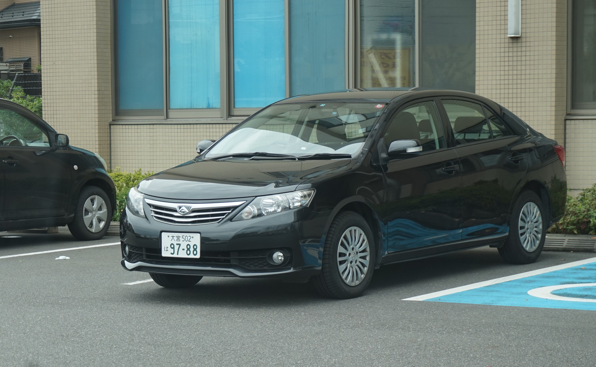
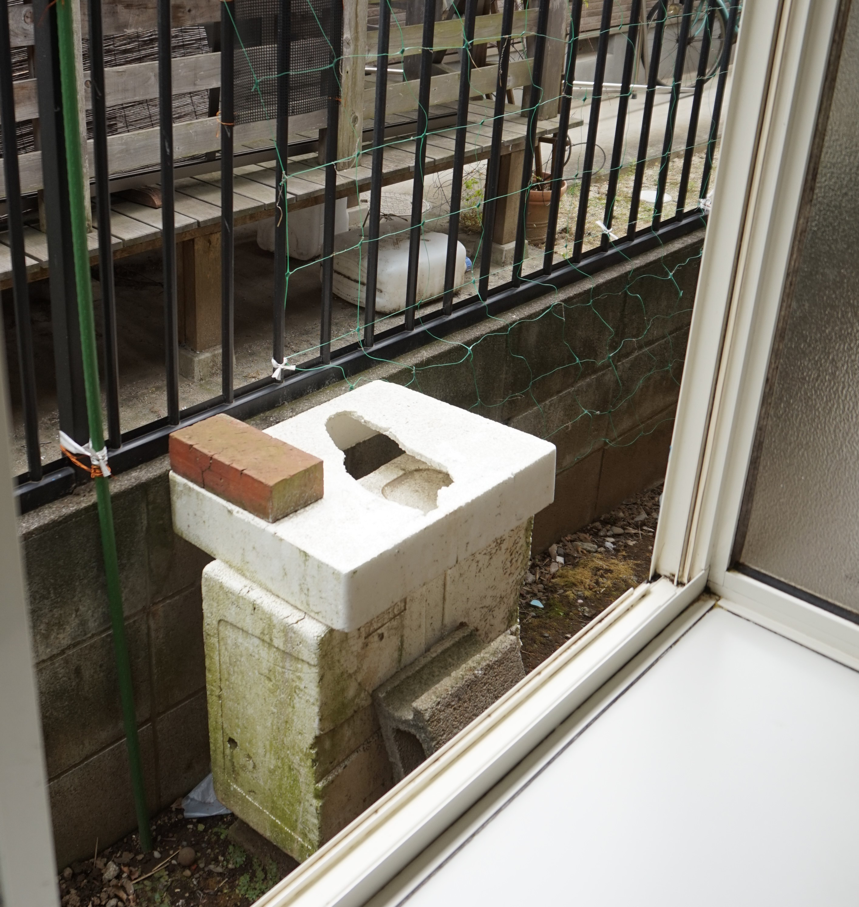

殺人組織が積み重ねてきた犯行の軌跡～近隣住民を抱き込んで～
介護老人保健施設「エリジオン大和田」（さいたま市見沼区大和田町）で行われた密室殺人の主犯の片方である殺人組織（オモテの仕事は、日本有数の調査会社、全国に支店あり。）が告発人に行ってきた数多くの犯行の中から、いくつかを紹介する。
埼玉県警は、「殺人組織の犯罪データ」を保有しているので、本気で捜査する気があれば、これを突破口に殺人組織に迫ることができるのである。
大宮東警察署管内での犯行
１．告発人は、２０１５年（平成２７年）６月高齢者（女性）の殺人についての告発状を大宮東警察署担当刑事に提出したのである。担当刑事との何回目かの打ち合わせの時、告発人は、殺人組織について「労務者風からエリートサラリーマンと人材が豊富である。」と説明したら、担当刑事は、「私が告発状を持って行った以降、告発人が来る日に事件が発生するようになった。」と発言されました。労務者風の人間が事件を起こして、担当刑事が忙しくて告発人との打ち合わせが出来ないように妨害工作したのだと思います。
担当刑事がこの発言をした以降、告発人が行く日に事件は、発生しなくなっていると思います。担当刑事に確認をしてみてください。どうしてだと思いますか？
大宮東警察署に盗聴器を設置して、二人の会話を盗聴していたからです。担当刑事に怪しまれたため、事件を起こすのを中止したのです。（大宮東警察署に殺人組織の協力者がいるということ。）
⇒この文章に出てくる「事件を起こした労務者風の人間」は、殺人組織に依頼されて事件を起こしているのである。この労務者風の人間を問い詰めれば、「殺人組織及びその子会社（協力会社）」の情報が得られると思うのである。
２．大宮東警察署担当刑事は、一度打合せの時あくびをし、睡魔に襲われ、告発人の話に上の空の時がありました。告発人は、直ぐに分かりました。睡眠薬を飲まされたと。告発人も被害にあっているからです。担当刑事の昼食は宅配弁当だと思います。担当刑事に確認をしてみて下さい。数多くある宅配弁当の中から睡眠薬の入った宅配弁当を担当刑事の机の上に置いた人は、殺人組織の協力者です。
⇒この文章に出てくる「殺人組織の協力者」とは、２０１５年（平成２７年）６月当時、刑事課の中にいるのである。
３．告発人が利用しているスーパーマーケットの一つに大宮東警察署管内にある「マミーマート南中野店」があります。このスーパーに殺人組織から女性がレジのパートとして送り込まれていました。この女性は、告発人の時、わざとレジ打ちを間違えました。告発人のクレームで買い物時間が長引くなるように企てました。この女性は、他のレジの人にも告発人の時、間違えるように指示をしました。このスーパーでは、レジ打ちを間違えた商品は無料となるルールであったため、スーパーに多大の損害を与えました。 （注：令和３年に店舗運営規定が改訂され、無料にならなくなりました。）
どうして、告発人の買い物時間が長引くなるように企てたと思いますか？
告発人が買い物をしている間に、殺人組織は合鍵を使って告発人の家に侵入し物色をしていたからです。（玄関の鍵を何回も変えたが、合鍵を作られているのである。）
レジ打ちを間違える相手が同一人物に集中していたため、店長はこの犯行に気が付きました。 スーパーの駐車場にパトカーが止まっていた時がありましたが、この件で来たのだと思います。大宮東警察署の警察官に確認をしてみてください。
女性がスーパーに送り込まれたのは、担当刑事との打ち合わせが始まって間もなくの、平成２７年７月ごろでした。
殺人組織から送り込まれた女性の名前は「高橋」でした。どうしてだと思いますか？
担当刑事の名前が「高橋」だったからです。これも殺人組織がよく使う嫌がらせパターンの一つです。
⇒この文章に出てくる「わざとレジ打ちを間違えた高橋という女性」は、「殺人組織か、その子会社（協力会社）」の人なのである。この女性を問い詰めれば、「殺人組織か、その子会社（協力会社）」の情報が得られると思うのである。

大宮東警察署に行った時、待ち伏せしていた「８８ナンバー」の車
大宮警察署管内での犯行
４．２０１５年（平成２７年）４月、告発人は、埼玉県警の総合相談センターに「死体はありませんが、明らかに殺人が行なわれました。警察は捜査をして頂けますか？家を一歩出ると尾行されているため、身動きが出来ません。電話は、盗聴されているので、今後の捜査に影響するので電話はしないで下さい。」とのメールを送付しました。
その後、大宮警察署から女性警察官が二回家に訪ねて来ました。女性警察官が家に訪ねて来ることが殺人組織に漏れている事に告発人は気が付いたので、女性警察官に会いませんでした。女性警察官の周りの人間が殺人組織に情報を流した思われます。
女性警察官に確認をしてみてください。告発人の家に来る日と時間を二回とも知り得た人間はどなたかと？
その中に殺人組織に情報を流した人がいます。
⇒この文章に出てくる「女性警察官」に確認をしてみて下さい。殺人組織に情報を流した警察官が判明するかも知れません。（告発人の住居地区は、大宮警察署の管轄区域であるため、昔から警察官の中に殺人組織の協力者がいた。）
５．2013年（平成25年）9月、宅配業者が家の中に侵入して来たので現行犯逮捕しました。家に入って来たのは、ドライバーではなく、補助員でした。補助員は、捕まえた時、天井を見ていました。告発人は、直ぐに分かりました。殺人組織の指図で家の中に入って来たのだと。殺人組織は、夜、屋根裏に侵入し、天井裏から室内に侵入していました。
告発人は、それに気付いたので天井裏から侵入出来ないように補強をしました。殺人組織は天井裏から侵入出来なくなったので、偵察に寄こしたのです。
多くの警察官が家に来ました。その中に、警察官の服装をした殺人組織の人が紛れ込んでいました。
鑑識課の警察官は、最後に室内写真を撮る時、このニセ警察官を室内に招き入れ、室内の情報収集の手助けをしました。
鑑識課の警察官は、殺人組織の協力者です。刑事課の警察官は、殺人組織の協力者か、又はニセ警察官である事を知っていました。交番から来た警察官は、何も知らなかったと思います。
⇒この文章に出てくる「鑑識課の警察官」は、殺人組織のことを知っているのである。
６．約１５年前、大宮警察署管内で自転車（ロードバイク）と接触事故を起こしました。自転車（ロードバイク）に乗っていたのは、スタントマンでした。
警察官は、直進が優先だと言っていましたが、スタントマンは歩道にあるポールにつかまって待機をしていました。
私の車が右折しかけたら、ロードバイクを加速させハンドルを左にきり、車のフロントにロードバイクをぶつけて来ました。スタントマンは、身の安全を確保するため車に接触する前に前輪の急ブレーキをかけて、自分の体を空中に逃がしました。暫くしてから、大型トレーラーが立て続けに３台来て、細い道を右折して行きました。右折する時一時停止をして運転席を支える支柱を道路に激しく叩き付け、道路に傷を付けて行きました。凄い衝撃音と地響きがしました。
そもそも大型トレーラーは、どこに行くにしても、あの細い道を右折する必然性がありません。
スタントマンは着地をした時、耳にかすり傷を負いましたが、保険金を受け取りました。その後、保険会社のデータベースから保険会社にいる殺人組織の協力者によって、この事故は削除されました。
どうしてだと思いますか？
保険金を狙った当たり屋としてリストアップされるのを恐れたからです。静岡県警・埼玉県警のデータベースでスタントマンの名前で検索してみて下さい。交通事故の被害者として、多くがリストアップされると思います。
スタントマンは、殺人組織の子会社の人と思われます。大型トレーラーは、殺人組織が手配したと思われます。
交通課の警察官は、殺人組織の協力者ではないと思います。思いやりのある方でした。
但し、ロードバイクに乗っている人を善良な人だと思い込んで捜査をしたため、加害者と被害者が・・・（以下、10文字分非表示）・・・。（思いやりのある警察官でしたので）
⇒この文章に出てくる「交通課の警察官」は、スタントマンの上司に会ったと聞きました。交通課の警察官から殺人組織の子会社の情報が得られるのである。
７．この事故の後、鴻巣で免許証の更新講習を二回受講しました。二回目の講習の時に、殺人組織によって電磁波を照射される被害に遭いました。（一回目は、未遂です。）電磁波を照射された経緯は、下記のとおりです。
殺人組織は、告発人が受講する教室は建物の端部の教室を使用するように指示をしました。（一回目が、未遂になったためです。）黒板に書く講習の開始時間は、正規の開始時間より遅い時間を書くように指示をしました。告発人が黒板を見て教室を出ていったら、講師は、講習の開始時間を正規の開始時間に訂正をしました。
どうしてだと思いますか？
殺人組織に属する講習参加者（複数）に対して、教室に遅刻して入って来る人が電磁波を照射するターゲットであると指示してあったからです。
告発人は、講習を受講中に電磁波を浴び、気分が悪くなったため廊下に避難をしました。講習補助員が来て、教室に戻るように言いました。告発人が拒否をしたため、大声で怒鳴りあいになり、講師も廊下に出て来ました。
告発人が教室に戻らないため、所長を呼んで来ました。告発人は、所長に対し、「目に見えないものを浴びせられている。」と被害を訴えました。所長が、「目に見えないもの？」と聞いてきたので、私は、「電磁波です。」と答えました。更に、「ある組織に毎日尾行されている。暴力団では無い。」と言いました。
これは、２０１4年（平成２６年）２月の話です。所長・講師に確認をしてみて下さい。建物の端部の教室を使用するように指示し、講習の開始時間を正規の開始時間より遅い時間を黒板に書くように指示した人は、殺人組織の人です。
⇒この文章に出てくる「所長・講師」から殺人組織の情報が得られるのである。所長は、講師から詳細な報告を受けているのである。
８．告発人は、２０１７年（平成２９年）７月２８日（金）植木の薬剤散布のため、自家用車を自宅の前の道路に避難させておりました。大宮警察署にクレームの電話が多数寄せられたため、「放置駐車違反」のラベルを貼られてしまいました。
警察にクレームの電話が多数寄せられたとのことですが、自宅の前の道路は、クレームが多数いくほどの自動車の通行量はありません。1時間に1台か2台位の通行量しかない道路です。警察にクレームの電話をした人達は、殺人組織かその子会社の人達です。嫌がらせのために、違反金を払わせる目的で、警察にクレームの電話を入れたのです。
⇒この文章に出てくる「警察にクレームの電話をした人達」の氏名・電話番号が、大宮警察署に保存されていれば、殺人組織かその子会社の情報が得られると思うのである。
「弁明書」をFAXで送付しました。約１０年前も家の前の道路に車を停めて置いて、「放置駐車違反」にされてしまいました。この時は、「弁明書」を郵送したら、「弁明書」が抜き取られて「差し替えた弁明書」が公安委員会に届きました。
告発人は、同年９月１９日埼玉県公安委員会（上尾市）にFAXで送付した弁明書が差し替えられていないか確認に行きました。公安委員会が受領した「弁明書」は、告発人が送付したものでした。
また、告発人が、埼玉県公安委員会で説明を求められた「約１０年前の放置駐車違反の内容」が、埼玉県公安委員会から殺人組織に漏れてしまったのである。
殺人組織は、尾行する準備の時間稼ぎのために自転車を道路に駐車し、告発人が車を駐車場から出すのに、ハンドルの切り返しで時間がかかるようにしたのである。告発人は、直ぐに発車できるように道路に駐車して置いたら、「放置駐車違反」のラベルを貼られたと説明しました。告発人の家から見て左側の貸家に住んでいる殺人組織の家族が埼玉県公安委員会に説明した以降、家の前の道路に自転車を駐車しっぱなしになったのである。
埼玉県公安委員会にも、殺人組織の協力者がいたのである。
左側の貸家に住んでいた家族は、女子高生がいたので、さいたま地方検察庁が告発状を受理したため、この件が記載されていたので捜査されるのを恐れて、告発状が受理された日から２週間後に引っ越してしまった。
近隣住民を殺人組織の協力者にして情報収集を行っている
９．告発人の自宅の両隣は昔からの住人ですが、殺人組織にだまされて（？）殺人組織の協力者として、告発人の監視・情報収集・殺人組織への合図などをさせられているのである。
また、告発人の自宅から約３０mの所にある中華料理店（？）も殺人組織の協力者なのである。この家の"ばあさん"が告発人の車の行く方向を偵察して、殺人組織に連絡しているのである。（殺人組織のオモテの仕事は、企業の信用調査（信用力を点数で表示）を行っているので、このルートで殺人組織の協力者にしたと思われる。）
ここからも殺人組織の情報が得られると思うのである。
《この文書を作成中、殺人組織にパソコンを見られているため、当然殺人組織は、口止め工作をしております。》
隣家に駐車していた「８８ナンバー」の車（隣家所有の車ではない。）

真夜中に、隣家から侵入した時の靴の跡
告発人の自宅の周辺に住んでいる多数の殺人組織の家族たち
１０．告発人の自宅の前に貸家が２軒あるが、代々、殺人組織の家族が、住んでいるのである。２軒とも、主人は、殺人組織かその子会社に勤務しているのである。
ここからも殺人組織の情報が得られたのである。
告発人の家から見て左側の貸家に住んでいた家族は、女子高生がいたので、さいたま地方検察庁が告発状を受理したため、告発状に犯行が記載されていたので捜査されるのを恐れて、告発状が受理された日から２週間後に引っ越してしまった。
１１．告発人の自宅の近隣には、現在も殺人組織に属する人達が多く住んでいるのである。
告発人の自宅から半径８００mの範囲内に「８８ナンバー」（※ナンバープレートに８の数字が２つあるという意味です。）の車が多数駐車してあるが、殺人組織に属す人の車であると、告発人は、思っているのである。
（注）殺人組織は、情報収集活動により「８」の数字に意味があることを把握してから、「８８」「８８８」「８８８８」ナンバーの車を使って嫌がらせが始まったのである。【8.歯科医（殺人協力者）と殺人組織の関係】の章を参照
最新の情報が最後のページに記載してあります。
（ここをクリックして下さい。）
日本は、本当に法治国家なのか ？
SNSの拡散で、警察庁長官を動かそう ！